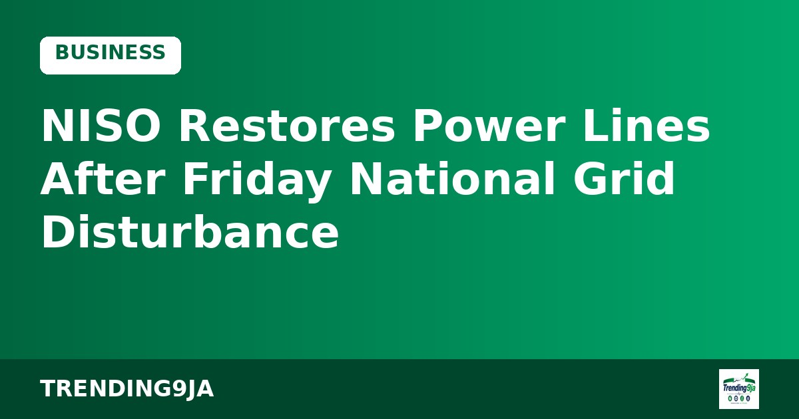

Nigerian Enamelware Reduces Half-Year Loss to N40.66m
Nigerian Enamelware Plc has reported a reduced half-year deficit of N40.66m following higher six-month revenues and lower production costs, according to Punch.

Eleven manufacturing companies listed on the Nigerian Exchange expended approximately N841.99 billion on energy requirements during the first nine months of 2026, according to financial reports analysed by Punch. This figure reflects a 7.4 per cent increase compared to the N784.08 billion recorded by the same firms in the corresponding period of 2025.
The report highlighted that cement manufacturers accounted for the vast majority of this expenditure. Dangote Cement and BUA Cement jointly expended N797.44 billion, representing 94.7 per cent of the overall energy bill across all eleven businesses examined. In the previous year, both cement giants had spent N747.33 billion during the same period.
BUA Cement recorded the largest increase in naira terms, with its power expenses jumping 21.6 per cent from N178.36 billion in 2025 to N216.95 billion in 2026. Meanwhile, group fuel and power costs for Dangote Cement rose by two per cent, climbing to N580.49 billion from N568.97 billion recorded in the prior year.
Excluding the cement industry, energy expenses for the remaining nine firms rose by 21.2 per cent, moving from N36.75 billion to N44.55 billion. UAC of Nigeria posted the sharpest percentage rise, as its electricity and power costs soared by 172.1 per cent from N4.87 billion to N13.24 billion. Other firms like BUA Foods, Champion Breweries, Dangote Sugar Refinery, and Meyer also reported cost increases.
Conversely, a few companies managed to lower or hold their energy spending. Beta Glass reduced its bill by 5.3 per cent to N23.22 billion, while Fidson Healthcare maintained a stable spend of N4.18 billion. MeCure Industries also saw its factory gas expenses decline.
Punch noted that the surge in spending aligns with ongoing complaints from industrial operators over unreliable grid electricity. Segun Ajayi-Kadir, the Director-General of the Manufacturers Association of Nigeria, explained that spending by member companies on self-generated power has consistently expanded each year.
Sources: Punch
← More Business stories
Nigerian Enamelware Plc has reported a reduced half-year deficit of N40.66m following higher six-month revenues and lower production costs, according to Punch.

Nigeria's gross oil revenue fell by N1.44tn in H1 2026 despite higher global oil prices, according to a report by the Budget Office cited by Punch.

NISO has restored all transmission lines after a Friday grid disturbance caused load losses across parts of Nigeria, clarifying it was not a total system collapse.
Nigeria's trending news, politics and entertainment, straight to your email.
By subscribing you agree to our Privacy Policy. Unsubscribe any time.